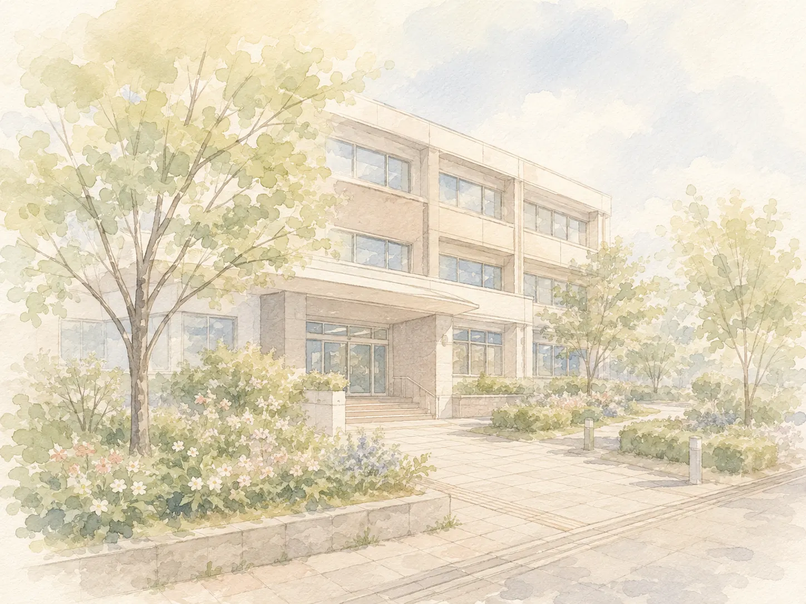

「あなたは対象になりません」。窓口でそう言われて、帰ってきた方がいます。でも、それで終わりではありません。もう一度、申請できます。
生活保護を申請することは、法律で守られた権利です。国（厚生労働省）も「生活保護の申請は国民の権利です」と伝えています。
窓口で「まだ若いから」「働けるから」「家族に頼って」と言われることがあります。けれど、受けられるかどうかを決めるのは、申請したあとの調べです。申請の前に、窓口で決まることではありません。
窓口では、まず「相談」として話を聞かれることが多いです。相談だけでは、申請をしたことになりません。そのまま帰ると、何も始まらないままです。
「申請します」とはっきり伝えることが大切です。申請書を出すと、役所は原則として14日以内に、受けられるかどうかを決めて知らせます。決まるまでの流れは、生活保護は何日で決まる？でお伝えしています。
一度断られると、もう一度行くのはこわいものです。何を言えばよかったのか、わからないままの方も多いです。
当事務所では、必要な書類をこちらで作ります。役所へは、必要に応じて一緒に行きます。送り迎えをすることもあります。前に断られたときのことも、聞かせてください。どこでつまずいたのかを、一緒に確かめます。
「前に断られたんです」。その一言で大丈夫です。お金が一円もない方も、相談できます（所持金ゼロでも生活保護の相談はできます）。
相談は無料です。お問い合わせページからご連絡ください。